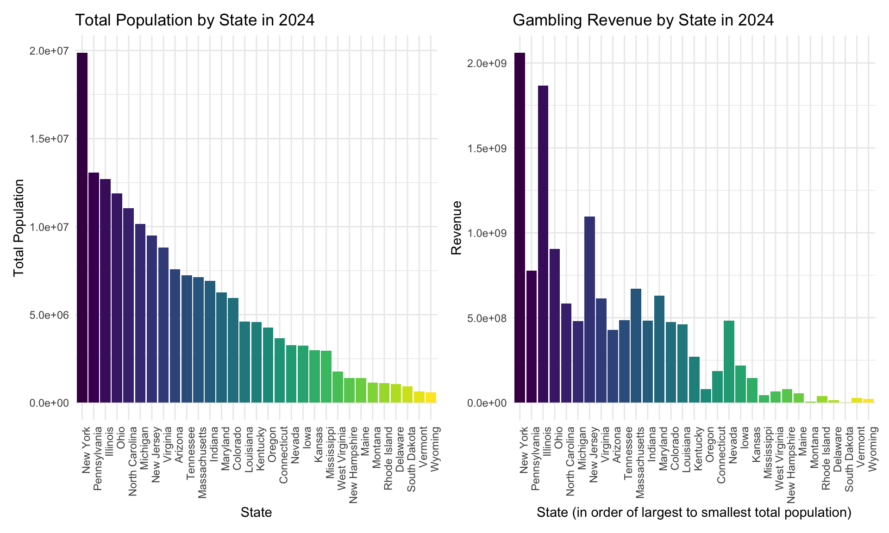
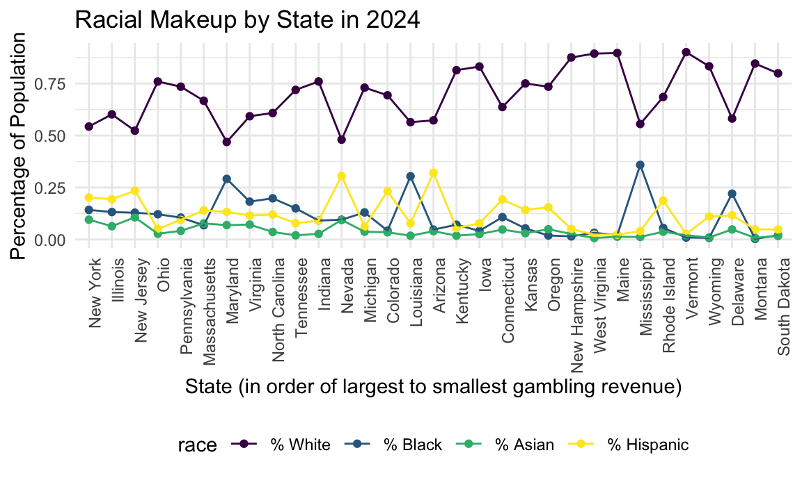
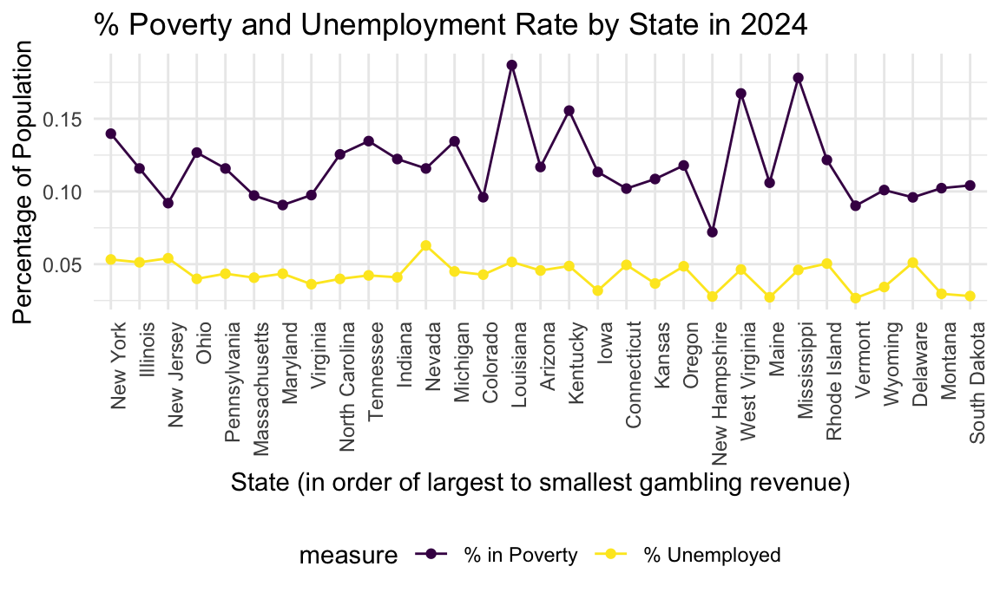
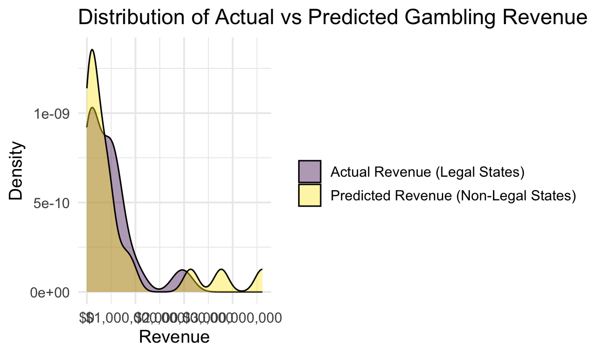
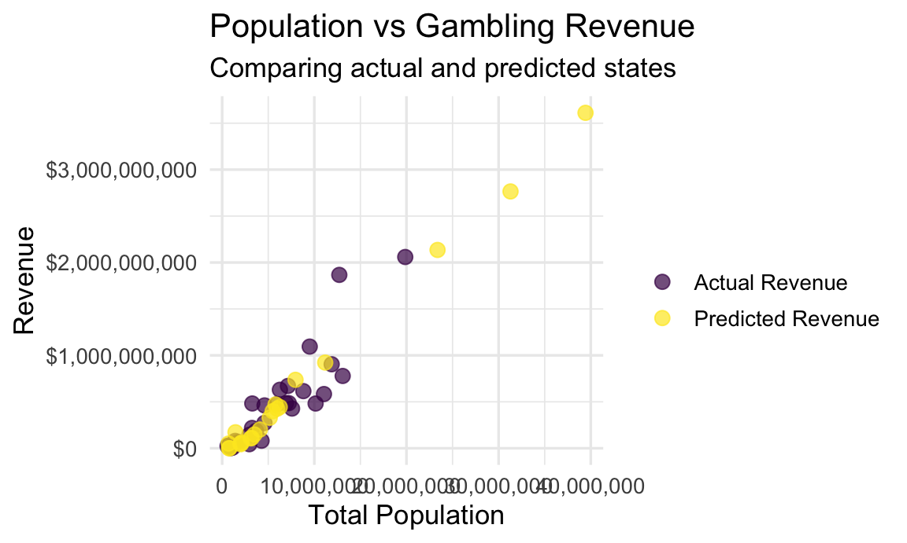
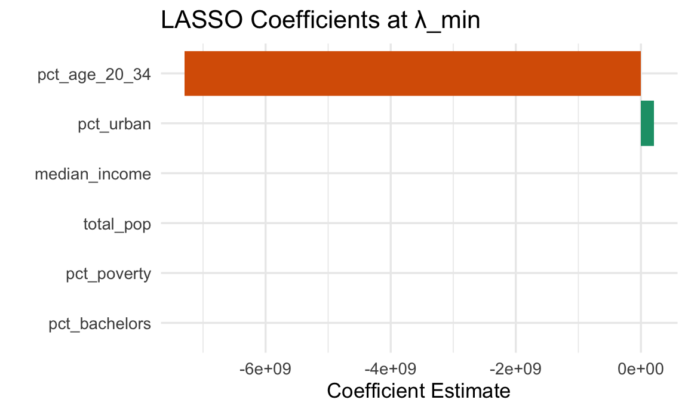

Analysis
library(tidyverse)## ── Attaching core tidyverse packages ─────────────── tidyverse 2.0.0 ──
## ✔ dplyr 1.1.4 ✔ readr 2.1.5
## ✔ forcats 1.0.0 ✔ stringr 1.5.1
## ✔ ggplot2 3.5.2 ✔ tibble 3.3.0
## ✔ lubridate 1.9.4 ✔ tidyr 1.3.1
## ✔ purrr 1.1.0
## ── Conflicts ───────────────────────────────── tidyverse_conflicts() ──
## ✖ dplyr::filter() masks stats::filter()
## ✖ dplyr::lag() masks stats::lag()
## ℹ Use the conflicted package (<http://conflicted.r-lib.org/>) to force all conflicts to become errorslibrary(rvest)##
## Attaching package: 'rvest'
##
## The following object is masked from 'package:readr':
##
## guess_encodinglibrary(httr)
library(jsonlite)##
## Attaching package: 'jsonlite'
##
## The following object is masked from 'package:purrr':
##
## flattenlibrary(patchwork)
library(glmnet)## Loading required package: Matrix
##
## Attaching package: 'Matrix'
##
## The following objects are masked from 'package:tidyr':
##
## expand, pack, unpack
##
## Loaded glmnet 4.1-10library(webshot2)
library(scales)##
## Attaching package: 'scales'
##
## The following object is masked from 'package:purrr':
##
## discard
##
## The following object is masked from 'package:readr':
##
## col_factorlibrary(corrplot)## corrplot 0.95 loadedlibrary(Metrics)
library(kableExtra)##
## Attaching package: 'kableExtra'
##
## The following object is masked from 'package:dplyr':
##
## group_rowslibrary(viridis)## Loading required package: viridisLite
##
## Attaching package: 'viridis'
##
## The following object is masked from 'package:scales':
##
## viridis_palknitr::opts_chunk$set(
fig.width = 6,
fig.asp = .6,
out.width = "90%"
)
theme_set(theme_minimal() + theme(legend.position = "bottom"))
options(
ggplot2.continuous.colour = "viridis",
ggplot2.continuous.fill = "viridis"
)
scale_colour_discrete = scale_color_viridis_d
scale_fill_discrete = scale_fill_viridis_dExploratory Data Analysis
Import Data
total_state_revenue = read_csv("data/total_state_revenue.csv")
model_clean_2024 = read_csv("data/model_clean_2024.csv")
demographics_2024 = read_csv("data/demographics_2024.csv")Gambling visuals
Plot gambling revenue by year
# Aggregate total revenue by year
yearly_revenue_summary = total_state_revenue |>
group_by(Year) |>
summarize(Total_Revenue = sum(Revenue, na.rm = TRUE))
yearly_revenue_summary |>
ggplot(aes(x = Year, y = Total_Revenue)) +
geom_col(aes(fill = as.factor(Year)), show.legend = FALSE) +
geom_text(aes(label = scales::dollar(Total_Revenue, scale = 1e-9, suffix = "B")),
vjust = -0.5) + # Add labels in Billions
scale_y_continuous(labels = scales::dollar_format()) +
scale_x_continuous(breaks = 2018:2024) +
labs(
title = "Total US Gambling Revenue (2018-2024)",
subtitle = "Aggregated revenue across all states",
x = "Year",
y = "Total Revenue"
)
Plotting gambling revenue by state over time
# Identify top 5 states by 2024 revenue to keep things looking clean
top_states = total_state_revenue |>
filter(Year == 2019) |>
slice_max(Revenue, n = 5) |>
pull(State)
state_growth_plot_data = total_state_revenue |>
mutate(
State_Group = ifelse(State %in% top_states, State, "All Other")
) |>
group_by(Year, State_Group) |>
summarize(Revenue = sum(Revenue, na.rm = TRUE), .groups = "drop") |>
mutate(State_Group = fct_reorder(State_Group, Revenue, .desc = TRUE))
ggplot(state_growth_plot_data, aes(x = Year, y = Revenue, fill = State_Group)) +
geom_col() +
scale_y_continuous(labels = scales::dollar_format()) +
scale_x_continuous(breaks = 2018:2024) +
labs(
title = "US Gambling Revenue Growth by State",
x = "Year",
y = "Revenue",
fill = "State"
)
Plotting revenue rank: top 5 gambling markets by year since 2018
# Calculate Ranks for every state, every year
ranked_data = total_state_revenue |>
group_by(Year) |>
mutate(Rank = min_rank(desc(Revenue))) |>
ungroup()
# Identify "States of Interest"
# We want to track any state that was Top 5 at any point
focus_states = ranked_data |>
filter(Rank <= 5) |> # can change if we want less point to start and end points: filter((Year == 2018 & Rank <= 5) | (Year == 2024 & Rank <= 5)) |>
pull(State) |>
unique()
# Filter the dataset to just those states
plot_data = ranked_data |>
filter(State %in% focus_states)
plot_data |>
ggplot(aes(x = Year, y = Rank, color = State, group = State)) +
geom_point(size = 3) +
geom_line(linewidth = 1.2) +
scale_y_reverse(breaks = 1:max(plot_data$Rank, na.rm = TRUE)) +
scale_x_continuous(breaks = 2018:2024) +
geom_text(data = plot_data |> filter(Year == 2018),
aes(label = paste(Rank, State)), x = 2017.8, hjust = 1, size = 3) +
geom_text(data = plot_data |> filter(Year == 2024),
aes(label = paste(Rank, State)), x = 2024.2, hjust = 0, size = 3) +
labs(
title = "Shift in Top Gambling Markets (2018 vs 2024)",
subtitle = "Tracking the rank of states that were in the top 5 in either 2018 or 2024",
y = "Revenue Rank",
x = "Year"
) +
theme_minimal() +
theme(
legend.position = "none",
panel.grid.minor = element_blank()
) +
coord_cartesian(xlim = c(2017, 2025))## Warning: Removed 17 rows containing missing values or values outside the scale
## range (`geom_point()`).## Warning: Removed 17 rows containing missing values or values outside the scale
## range (`geom_line()`).## Warning: Removed 7 rows containing missing values or values outside the scale
## range (`geom_text()`).
Demographic visuals
Plot of Total Population in 2024 by State
population_plot =
model_clean_2024 |>
filter(State != "Washington D.C.") |> #drop DC bc all demographic data is NA
mutate(
State = as.factor(State),
State = fct_reorder(State, total_pop, .desc = TRUE)
) |>
ggplot(aes(x = State, y = total_pop)) +
geom_col(aes(fill = State)) +
theme(
axis.text.x = element_text(angle = 90, hjust = 1, vjust = 1),
legend.position = "none") +
labs(
y = "Total Population",
title = "Total Population by State in 2024"
)Plot of Gambling Revenue in 2024 by State
revenue_plot =
model_clean_2024 |>
filter(State != "Washington D.C.") |> #drop DC bc all demographic data is NA
mutate(
State = as.factor(State),
State = fct_reorder(State, total_pop, .desc = TRUE)
) |>
ggplot(aes(x = State, y = Revenue)) +
geom_col(aes(fill = State)) +
theme(
axis.text.x = element_text(angle = 90, hjust = 1, vjust = 1),
legend.position = "none") +
labs(
x = "State (in order of largest to smallest total population)",
y = "Revenue",
title = "Gambling Revenue by State in 2024"
)Patchwork Plot of Total Population and Gambling Revenue in 2024 by State
combined_revenue_population = (population_plot + revenue_plot)
combined_revenue_population
Racial Makeup of States in 2024
model_clean_2024 |>
filter(State != "Washington D.C.") |> #drop DC bc all demographic data is NA
select(State, Revenue, pct_white, pct_black, pct_asian, pct_hispanic) |>
pivot_longer(
cols = pct_white:pct_hispanic,
names_to = "race",
values_to = "percentage"
) |>
mutate(
State = as.factor(State),
State = fct_reorder(State, Revenue, .desc = TRUE),
race = factor(race,
levels = c("pct_white", "pct_black", "pct_asian", "pct_hispanic"),
labels = c("% White", "% Black", "% Asian", "% Hispanic"))
) |>
ggplot(aes(x = State, y = percentage, color = race, group = race)) +
geom_point() +
geom_line() +
theme(axis.text.x = element_text(angle = 90, hjust = 1, vjust = 1)) +
labs(
x = "State (in order of largest to smallest gambling revenue)",
y = "Percentage of Population",
title = "Racial Makeup by State in 2024",
fill = "Race"
) 
Poverty % and Unemployment Rate by State in 2024
model_clean_2024 |>
filter(State != "Washington D.C.") |> #drop DC bc all demographic data is NA
select(State, Revenue, unemployment_rate, pct_poverty) |>
pivot_longer(
cols = c("pct_poverty", "unemployment_rate"),
names_to = "measure",
values_to = "percentage"
) |>
mutate(
State = as.factor(State),
State = fct_reorder(State, Revenue, .desc = TRUE),
measure = factor(measure,
levels = c("pct_poverty", "unemployment_rate"),
labels = c("% in Poverty", "% Unemployed"))
) |>
ggplot(aes(x = State, y = percentage, color = measure, group = measure)) +
geom_point() +
geom_line() +
theme(axis.text.x = element_text(angle = 90, hjust = 1, vjust = 1)) +
labs(
x = "State (in order of largest to smallest gambling revenue)",
y = "Percentage of Population",
title = "% Poverty and Unemployment Rate by State in 2024",
fill = "Measure"
) 
Let’s build a predictive model!
Build training dataset
# Build training dataset
training_data <- model_clean_2024 |>
select(
State,
Revenue,
total_pop,
median_income,
pct_bachelors,
pct_age_20_34,
pct_urban,
pct_poverty
) |>
drop_na() # make sure no missing values in predictors or RevenueFit linear regression model
# Fit linear regression model
# Model: Revenue = β0 + β1 * total_pop + β2 * median_income + ... + error
fit_lm <- lm(
Revenue ~ total_pop + median_income + pct_bachelors +
pct_age_20_34 + pct_urban + pct_poverty,
data = training_data
)
summary(fit_lm)##
## Call:
## lm(formula = Revenue ~ total_pop + median_income + pct_bachelors +
## pct_age_20_34 + pct_urban + pct_poverty, data = training_data)
##
## Residuals:
## Min 1Q Median 3Q Max
## -343955707 -71243106 2818238 102251402 763021755
##
## Coefficients:
## Estimate Std. Error t value Pr(>|t|)
## (Intercept) -2.966e+08 1.216e+09 -0.244 0.809
## total_pop 9.210e+01 1.200e+01 7.674 6.54e-08 ***
## median_income 6.809e+03 1.322e+04 0.515 0.611
## pct_bachelors -4.983e+07 1.972e+09 -0.025 0.980
## pct_age_20_34 -1.020e+10 1.352e+10 -0.755 0.458
## pct_urban 1.618e+08 4.739e+08 0.341 0.736
## pct_poverty 1.876e+09 3.013e+09 0.623 0.539
## ---
## Signif. codes: 0 '***' 0.001 '**' 0.01 '*' 0.05 '.' 0.1 ' ' 1
##
## Residual standard error: 227400000 on 24 degrees of freedom
## Multiple R-squared: 0.8359, Adjusted R-squared: 0.7948
## F-statistic: 20.37 on 6 and 24 DF, p-value: 2.503e-08states_no_gambling <-
demographics_2024 |>
anti_join(training_data, by = "State")
newdata_illegal <-
states_no_gambling |>
select(
State,
total_pop,
median_income,
pct_bachelors,
pct_age_20_34,
pct_urban,
pct_poverty
) |>
drop_na() # just in case a state is missing some demographicPredict revenue if illegal states legalized gambling
# Predict revenue if these states legalized gambling
pred_illegal <-
newdata_illegal |>
mutate(
predicted_revenue = predict(fit_lm, newdata = newdata_illegal)
) |>
arrange(desc(predicted_revenue))Compare distribution of real vs predicted
# Compare distribution of real vs predicted
summary(training_data$Revenue)## Min. 1st Qu. Median Mean 3rd Qu. Max.
## 9.209e+05 6.063e+07 4.274e+08 4.438e+08 5.993e+08 2.059e+09summary(pred_illegal$predicted_revenue)## Min. 1st Qu. Median Mean 3rd Qu. Max.
## -191325313 78725694 339787241 636990268 454658976 3706182311Fit a LASSO regression model
# Fit LASSO regression model
# Build design matrix (same predictors as your LM model)
X_train <- model.matrix(
Revenue ~ total_pop + median_income + pct_bachelors +
pct_age_20_34 + pct_urban + pct_poverty,
data = training_data)[, -1] # remove intercept column (glmnet adds its own)
# Outcome vector
y_train <- training_data$Revenue
set.seed(123)
# Cross-validated LASSO to choose lambda
lasso_cv <- cv.glmnet(
X_train,
y_train,
alpha = 1, # LASSO penalty
nfolds = 5,
standardize = TRUE # recommended because predictors differ in scale
)
# Final LASSO model at best lambda
lasso_model <- glmnet(
X_train,
y_train,
alpha = 1,
lambda = lasso_cv$lambda.min,
standardize = TRUE
)
lasso_cv$lambda.min #This is the penalty ## [1] 10761247Build the prediction matrix for the non-gambling states
# Build the prediction matrix for the non-gambling states
X_new <- model.matrix(
~ total_pop + median_income + pct_bachelors +
pct_age_20_34 + pct_urban + pct_poverty,
data = newdata_illegal)[, -1] # remove intercept column
# LASSO predictions
pred_illegal_lasso <-
newdata_illegal |>
mutate(
predicted_revenue_lasso = as.numeric(
predict(lasso_model, newx = X_new)
)
) |>
arrange(desc(predicted_revenue_lasso))
pred_illegal_lasso <- pred_illegal_lasso |>
mutate(predicted_revenue_lasso = pmax(predicted_revenue_lasso, 0))Compare models
summary(training_data$Revenue)## Min. 1st Qu. Median Mean 3rd Qu. Max.
## 9.209e+05 6.063e+07 4.274e+08 4.438e+08 5.993e+08 2.059e+09summary(pred_illegal$predicted_revenue) # from LM model## Min. 1st Qu. Median Mean 3rd Qu. Max.
## -191325313 78725694 339787241 636990268 454658976 3706182311summary(pred_illegal_lasso$predicted_revenue_lasso) # from LASSO model## Min. 1st Qu. Median Mean 3rd Qu. Max.
## 0.000e+00 6.132e+07 2.018e+08 6.279e+08 4.718e+08 3.612e+09#LASSO betterPredictive model tables and Figures
Table of Predicted Annual Gambling Revenue for Non-Legal States (LASSO Model)
# Clean negative values
pred_illegal_lasso <- pred_illegal_lasso |>
mutate(predicted_revenue_lasso = pmax(predicted_revenue_lasso, 0))
# Clean and format final table
pred_table <- pred_illegal_lasso |>
mutate(
Predicted_Revenue = dollar(predicted_revenue_lasso),
Population = comma(total_pop),
Median_Income = dollar(median_income)
) |>
select(
State,
Population,
Median_Income,
pct_bachelors,
pct_age_20_34,
pct_urban,
pct_poverty,
Predicted_Revenue
)
kable(pred_table, format = "html", caption = "Predicted Annual Gambling Revenue for Non-Legal States (LASSO Model)") |>
kable_styling(full_width = FALSE, bootstrap_options = c("striped", "hover"))| State | Population | Median_Income | pct_bachelors | pct_age_20_34 | pct_urban | pct_poverty | Predicted_Revenue |
|---|---|---|---|---|---|---|---|
| California | 39,431,263 | $100,149 | 0.3812365 | 0.0652504 | 0.9423663 | 0.1180257 | $3,611,645,904 |
| Texas | 31,290,831 | $79,721 | 0.3516383 | 0.0694787 | 0.8372028 | 0.1340909 | $2,765,125,447 |
| Florida | 23,372,215 | $77,735 | 0.3583638 | 0.0582353 | 0.9153419 | 0.1204723 | $2,135,268,431 |
| Georgia | 11,180,878 | $79,991 | 0.3631028 | 0.0673810 | 0.7406697 | 0.1258716 | $922,707,171 |
| Washington | 7,958,180 | $99,389 | 0.4101713 | 0.0616117 | 0.8337185 | 0.0993223 | $736,907,744 |
| Minnesota | 5,793,151 | $87,117 | 0.4003043 | 0.0634185 | 0.7187871 | 0.0933292 | $471,813,698 |
| Missouri | 6,245,466 | $71,589 | 0.3347161 | 0.0670586 | 0.6946748 | 0.1226321 | $443,937,391 |
| Wisconsin | 5,960,975 | $77,488 | 0.3455598 | 0.0673242 | 0.6708314 | 0.1032844 | $425,197,336 |
| South Carolina | 5,478,831 | $72,350 | 0.3333325 | 0.0634482 | 0.6794803 | 0.1325996 | $398,844,164 |
| Alabama | 5,157,699 | $66,659 | 0.2985358 | 0.0643101 | 0.5773724 | 0.1518804 | $327,792,352 |
| Oklahoma | 4,095,393 | $66,148 | 0.2931934 | 0.0701015 | 0.6462195 | 0.1490811 | $201,795,708 |
| Hawaii | 1,446,146 | $100,745 | 0.3775749 | 0.0586905 | 0.8606301 | 0.0998640 | $172,063,243 |
| Utah | 3,503,613 | $96,658 | 0.3911757 | 0.0874363 | 0.8978141 | 0.0832570 | $148,267,944 |
| Puerto Rico | 3,203,295 | $27,213 | 0.2969966 | 0.0663738 | 0.9187534 | 0.3730844 | $111,180,446 |
| Arkansas | 3,088,354 | $62,106 | 0.2711732 | 0.0664785 | 0.5547613 | 0.1553574 | $107,040,120 |
| New Mexico | 2,130,256 | $67,816 | 0.3178310 | 0.0681773 | 0.7454714 | 0.1641940 | $61,324,867 |
| Idaho | 2,001,619 | $81,166 | 0.3302656 | 0.0708042 | 0.6924218 | 0.1046070 | $51,404,787 |
| District of Columbia | 702,250 | $109,707 | 0.6546496 | 0.0729740 | 1.0000000 | 0.1731169 | $51,027,257 |
| Nebraska | 2,005,466 | $76,376 | 0.3535887 | 0.0714562 | 0.7300536 | 0.1087362 | $43,401,693 |
| Alaska | 740,133 | $95,665 | 0.3275460 | 0.0682283 | 0.6489949 | 0.1016680 | $0 |
| North Dakota | 796,568 | $77,871 | 0.3395173 | 0.0773305 | 0.6096684 | 0.1112829 | $0 |
Bar plot of predicted annual gambling revenue (if legalized)
pred_illegal_lasso_plot <- pred_illegal_lasso |>
mutate(predicted_revenue_lasso = pmax(predicted_revenue_lasso, 0)) |>
arrange(predicted_revenue_lasso) |>
mutate(State = factor(State, levels = State))
ggplot(pred_illegal_lasso_plot, aes(x = State, y = predicted_revenue_lasso)) +
geom_col(fill = "steelblue") +
coord_flip() +
scale_y_continuous(labels = dollar) +
labs(
title = "Predicted Annual Gambling Revenue (if legalized)",
subtitle = "LASSO model predictions for states without legal sports gambling",
x = "",
y = "Predicted Revenue"
) +
theme_minimal(base_size = 13)
Density plot of distribution of actual vs predicted gambling revenue
compare_df <- tibble(
group = c(rep("Actual Revenue (Legal States)", nrow(training_data)),
rep("Predicted Revenue (Non-Legal States)", nrow(pred_illegal_lasso))),
revenue = c(training_data$Revenue,
pred_illegal_lasso$predicted_revenue_lasso)
)
ggplot(compare_df, aes(x = revenue, fill = group)) +
geom_density(alpha = 0.4) +
scale_x_continuous(labels = dollar) +
labs(
title = "Distribution of Actual vs Predicted Gambling Revenue",
x = "Revenue",
y = "Density",
fill = ""
) +
theme_minimal(base_size = 13)
Scatterplot of population vs gambling revenue comparing actual and predicted states
scatter_df <- bind_rows(
training_data |> mutate(type = "Actual Revenue"),
pred_illegal_lasso |>
mutate(Revenue = predicted_revenue_lasso,
type = "Predicted Revenue")
)
ggplot(scatter_df, aes(x = total_pop, y = Revenue, color = type)) +
geom_point(size = 3, alpha = 0.7) +
scale_x_continuous(labels = comma) +
scale_y_continuous(labels = dollar) +
labs(
title = "Population vs Gambling Revenue",
subtitle = "Comparing actual and predicted states",
x = "Total Population",
y = "Revenue",
color = ""
) +
theme_minimal(base_size = 13)
Table of distribution comparison of actual vs. predicted revenue
summary_table <- tibble(
Metric = c("Min", "1st Quartile", "Median", "Mean", "3rd Quartile", "Max"),
Actual_Revenue = summary(training_data$Revenue)[c(1,2,3,4,5,6)],
Predicted_Revenue = summary(pred_illegal_lasso$predicted_revenue_lasso)[c(1,2,3,4,5,6)]
)
kable(summary_table, format = "html", caption = "Distribution Comparison: Actual vs Predicted Revenue") |>
kable_styling(full_width = FALSE, bootstrap_options = c("striped", "hover"))| Metric | Actual_Revenue | Predicted_Revenue |
|---|---|---|
| Min | 920918 | 0 |
| 1st Quartile | 60627294 | 61324867 |
| Median | 427397087 | 201795708 |
| Mean | 443822044 | 627940272 |
| 3rd Quartile | 599344939 | 471813698 |
| Max | 2059297238 | 3611645904 |
# Prepare actual revenue table
actual_table <- training_data %>%
select(State, Revenue) %>%
mutate(
revenue_source = "Actual (Legal States)",
Revenue = as.numeric(Revenue)
)
# Prepare predicted revenue table (LASSO)
predicted_table <- pred_illegal_lasso %>%
select(State, predicted_revenue_lasso) %>%
rename(Revenue = predicted_revenue_lasso) %>%
mutate(
revenue_source = "Predicted (Non-Legal States)"
)
# Combine both tables
ranked_table <- bind_rows(actual_table, predicted_table) %>%
arrange(desc(Revenue)) %>%
mutate(
Rank = row_number(),
Revenue = scales::dollar(Revenue)
) %>%
select(Rank, State, Revenue, revenue_source)LASSO cross-validation plot (lamda vs. cross-validation error)
plot(lasso_cv)-1.png)
LASSO coefficient path plot
plot(lasso_cv$glmnet.fit, xvar = "lambda", label = TRUE)
coef_mat <- as.matrix(coef(lasso_cv, s = "lambda.min"))
coef_df <- tibble(
variable = rownames(coef_mat),
coefficient = coef_mat[, 1]
) %>%
filter(variable != "(Intercept)")Plot of actual vs. predicted revenue (LASSO)
pred_lasso_train <- as.numeric(predict(lasso_model, newx = X_train))
training_data_lasso <- training_data %>%
mutate(pred_lasso = pred_lasso_train)
ggplot(training_data_lasso, aes(x = Revenue, y = pred_lasso)) +
geom_point(alpha = 0.7, color = "darkgreen") +
geom_abline(slope = 1, intercept = 0, linetype = "dashed", color = "red") +
scale_x_continuous(labels = dollar) +
scale_y_continuous(labels = dollar) +
labs(
title = "Actual vs Predicted Revenue (LASSO)",
x = "Actual Revenue",
y = "Predicted Revenue"
) +
theme_minimal(base_size = 13)
Correlation map of potential predictors (upper triangle only)
predictor_mat <- training_data %>%
select(total_pop, median_income, pct_bachelors, pct_age_20_34,
pct_urban, pct_poverty) %>%
as.matrix()
corr_mat <- cor(predictor_mat)
corrplot(
corr_mat,
method = "color",
type = "upper",
col = viridis(200), # <-- viridis palette applied here
tl.col = "black",
tl.srt = 45
)
Scatterplot of revenue vs. each predictor
plot_df <- training_data %>%
select(Revenue, total_pop, median_income, pct_bachelors,
pct_age_20_34, pct_urban, pct_poverty) %>%
pivot_longer(-Revenue, names_to = "predictor", values_to = "value")
ggplot(plot_df, aes(x = value, y = Revenue)) +
geom_point(alpha = 0.7) +
facet_wrap(~ predictor, scales = "free_x") +
scale_y_continuous(labels = dollar) +
labs(
title = "Revenue vs Key Demographic Predictors (Legal States)",
x = "Predictor Value",
y = "Revenue"
) +
theme_minimal(base_size = 13)
Table of model performance comparison between linear model and LASSO
# --- Linear Model Predictions ---
lm_pred <- predict(fit_lm)
# --- LASSO Predictions ---
lasso_pred <- as.numeric(predict(lasso_model, newx = X_train))
# --- True values ---
y_true <- training_data$Revenue
# --- Comparison Metrics ---
model_metrics <- tibble(
Model = c("Linear Model", "LASSO Model"),
RMSE = c(rmse(y_true, lm_pred),
rmse(y_true, lasso_pred)),
MAE = c(mae(y_true, lm_pred),
mae(y_true, lasso_pred)),
MAPE = c(mape(y_true, lm_pred),
mape(y_true, lasso_pred))
)
model_metrics## # A tibble: 2 × 4
## Model RMSE MAE MAPE
## <chr> <dbl> <dbl> <dbl>
## 1 Linear Model 200127907. 133430779. 3.44
## 2 LASSO Model 202606893. 132201269. 1.91model_metrics %>%
mutate(
RMSE = scales::dollar(RMSE),
MAE = scales::dollar(MAE),
MAPE = scales::percent(MAPE)
) %>%
kable(format = "html", caption = "Model Performance Comparison: Linear Model vs LASSO") %>%
kable_styling(full_width = FALSE, bootstrap_options = c("striped", "hover"))| Model | RMSE | MAE | MAPE |
|---|---|---|---|
| Linear Model | $200,127,907 | $133,430,779 | 344% |
| LASSO Model | $202,606,893 | $132,201,269 | 191% |
Column chart of LASSO coefficients at lambda min
coef_mat <- as.matrix(coef(lasso_cv, s = "lambda.min"))
coef_df <- tibble(
variable = rownames(coef_mat),
coefficient = coef_mat[, "lambda.min"]
) %>%
filter(variable != "(Intercept)") %>%
arrange(desc(abs(coefficient)))
coef_df %>%
mutate(
coefficient = scales::comma(coefficient)
) %>%
kable(format = "html", caption = "LASSO Feature Importance (λ_min)") %>%
kable_styling(full_width = FALSE, bootstrap_options = c("striped", "hover"))| variable | coefficient |
|---|---|
| pct_age_20_34 | -7,298,980,844 |
| pct_urban | 211,985,931 |
| median_income | 2,418 |
| total_pop | 91 |
| pct_bachelors | 0 |
| pct_poverty | 0 |
ggplot(coef_df, aes(x = reorder(variable, abs(coefficient)),
y = coefficient,
fill = coefficient > 0)) +
geom_col() +
coord_flip() +
scale_fill_manual(values = c("TRUE" = "#1b9e77", "FALSE" = "#d95f02"),
guide = "none") +
labs(
title = "LASSO Coefficients at λ_min",
x = "",
y = "Coefficient Estimate"
) +
theme_minimal(base_size = 13)
We compared a standard linear regression to a LASSO regularized model. Both models have sizeable error due to the extreme variability in state gambling revenues. While the linear model slightly outperforms LASSO in RMSE, the LASSO model achieves a much better MAPE (191% vs 344%), indicating more stable performance for low-revenue states.
LASSO also provides valuable model simplification: only two predictors retain nonzero coefficients—pct_age_20_34 and pct_urban—while income, population, poverty, and education are shrunk to zero. This suggests strong multicollinearity among socioeconomic indicators, with LASSO consolidating their predictive signal into a smaller set of variables. The results highlight that demographic structure (pct_age_20_34) and urbanization are the strongest predictors of sports gambling markets.
Go back to home